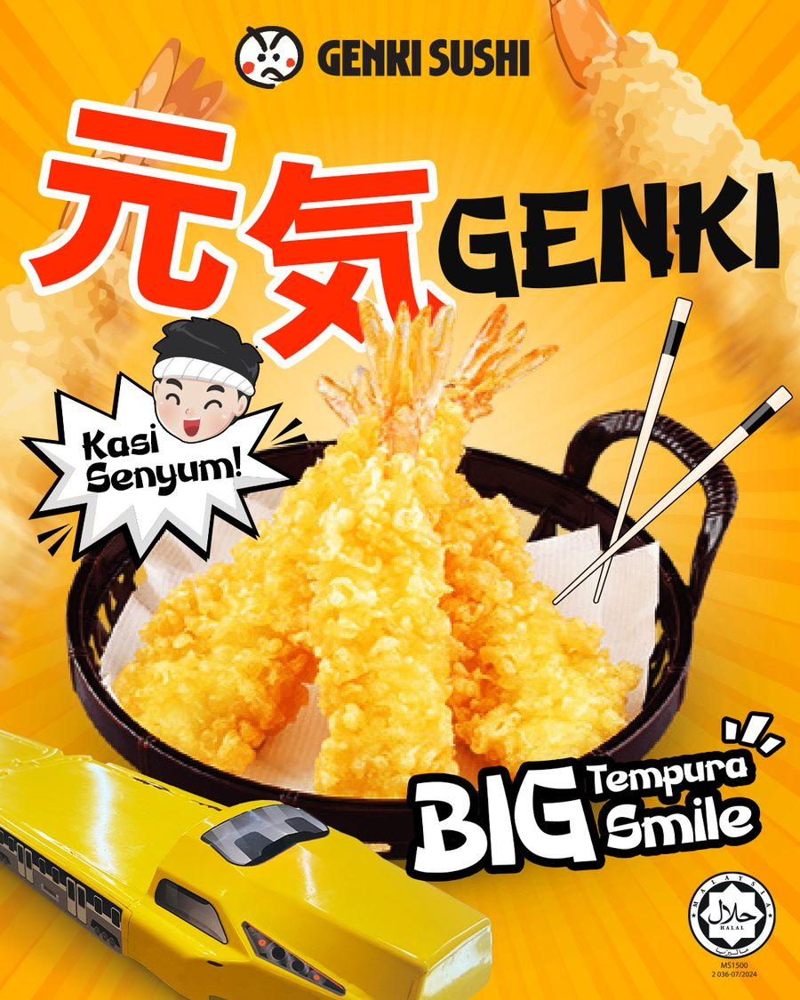
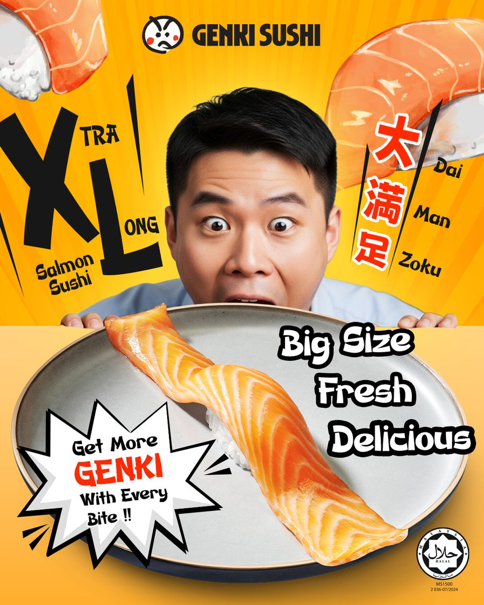
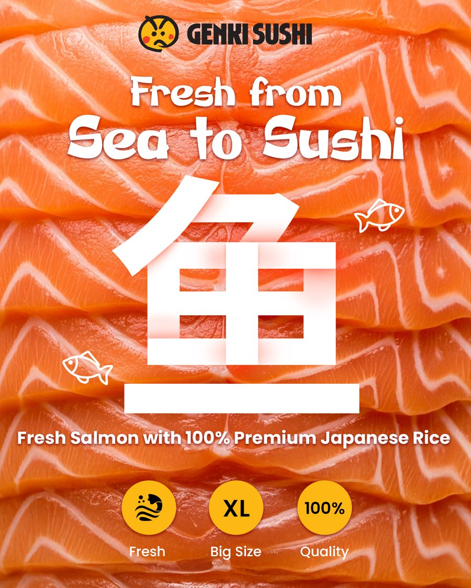
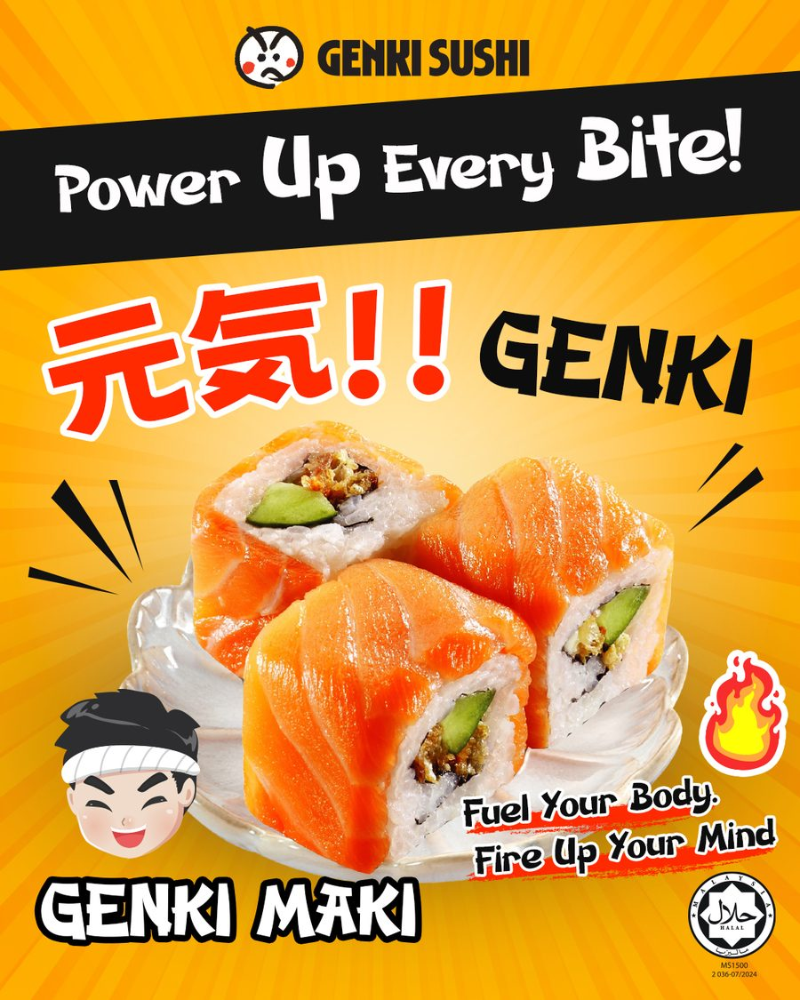
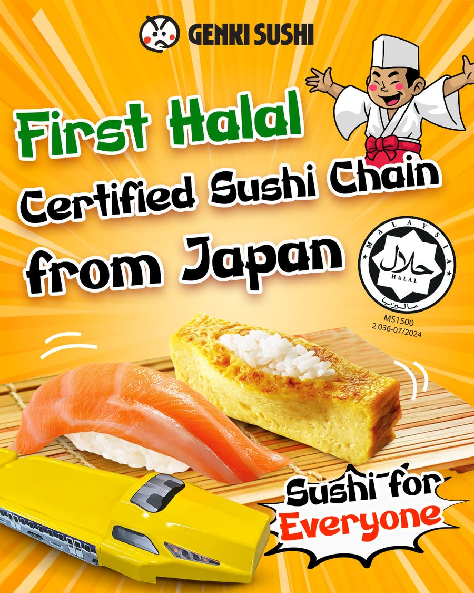
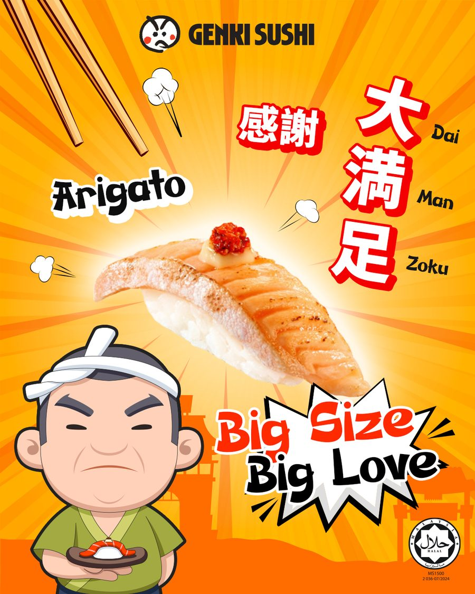
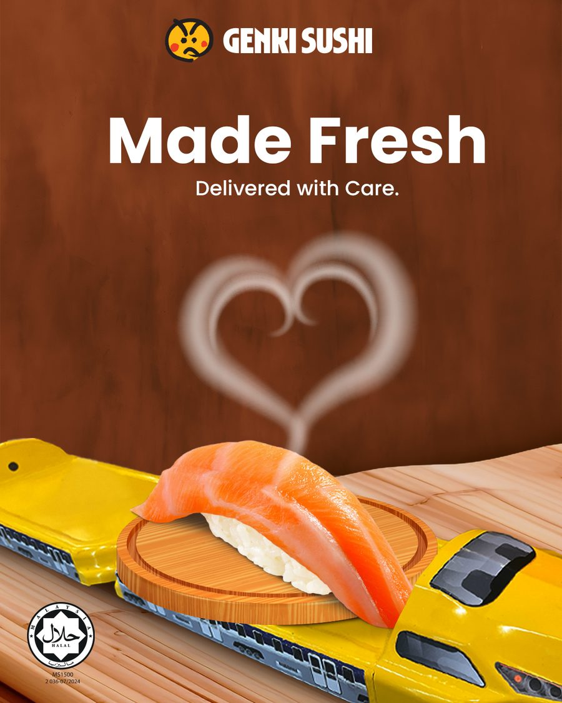
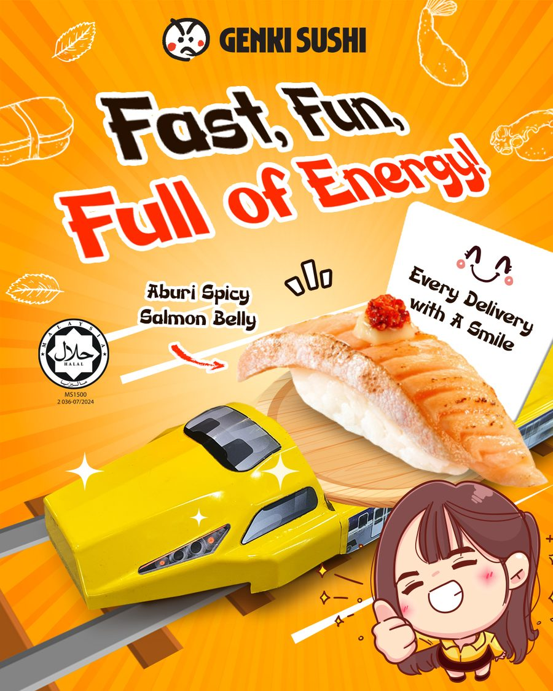

Client Case Study · Genki Sushi
Kasi
Kasi
Senyum.
A September campaign that turned big portions into bigger smiles.

A September campaign that turned big portions into bigger smiles.
Genki Sushi is the first halal certified sushi chain from Japan. For September, the brief was pure energy: play up the generous, oversized menu and the brand's signature genki spirit. I led a social campaign built around one very Malaysian line, Kasi Senyum, that carried across every post.
The campaign ran on big flavour and bright energy: the extra long Dai Man Zoku salmon, the Big Tempura Smile, Genki Maki, sea to sushi freshness, and a two for one unagi feast. Bold orange, cheeky copy, and a playful mix of Japanese and Malay that felt right at home with the mall crowd.








Short form reels carried the energy into video, from product hero cuts to menu highlights.